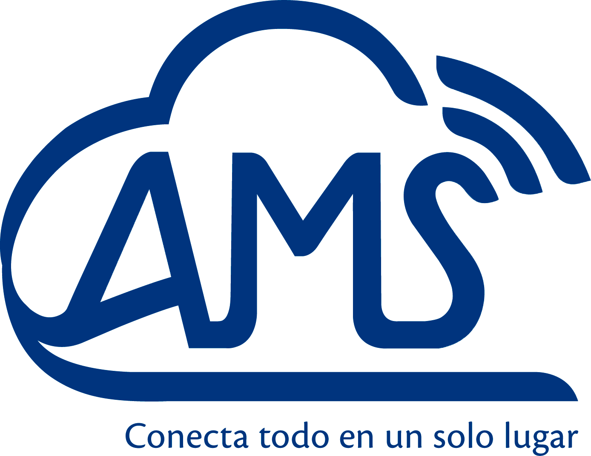

<ion-app>
  <ion-menu side="start" menuId="first" contentId="main">
    <ion-content>
      <div class="menu-header-bg"></div>
      <div class="header-content">
        
        <ion-label>
          <h2 class="text-long" >Convergencia</h2>
          <p class="text-long">MENU</p>
        </ion-label>
      </div>
      <div class="action-button" >
        <ion-button routerLink="/formulario" menuClose (click)="closeMenu()"><ion-icon name="add-circle"></ion-icon><span class="font-weight-300">Registrar Cliente</span></ion-button>
      </div>
      <ion-list class="menu-items" lines="none">
        
        <ion-item menuClose routerLink="/registro" (click)="closeMenu()" > <ion-icon name="home"></ion-icon>Reporte general</ion-item>
        

        
       

        <ion-item menuClose routerLink="/login" (click)="cerrar()" ><ion-icon color="primary" name="exit"></ion-icon>Salir</ion-item>
      </ion-list>
    </ion-content>
  </ion-menu>


  <ion-router-outlet id="main"></ion-router-outlet>
</ion-app>

